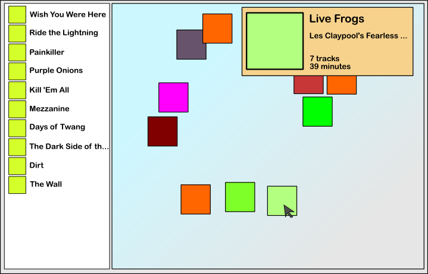
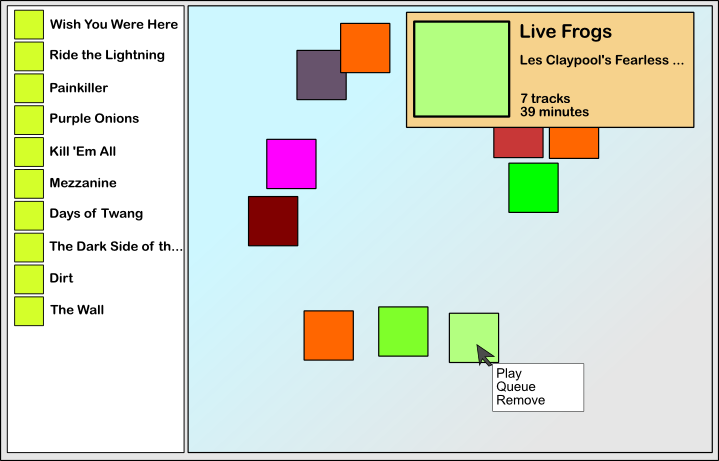

Omasta musiikkisoittimesta on kai joskus tullut puhuttua. Nyt MPD-aikoina on luonnollista hakea sen sijaan oman MPD-asiakasohjelman pariin. Hitsi kun en löytänyt, olenko julkaissut jotain mietteitäni aiemmin. Tässäpähän tulee sitten tuoreinta suunnittelua!
Järkeily
Artistit ja albumit esitetään valtaosassa soitto-ohjelmia aakkosjärjestyksessä. Joskus voi paremmasta ohjelmasta löytyä myös lisäyspäivämäärän mukaan lajittelua tai jotain muuta vänkää. Aakkosjärjestyshän on kiva, jos haluaa etsiä jonkun tietyn albumin kuunneltavaksi.
Mutta useimmissa tapauksissa emme suoralta kädeltä keksi hetkeen sopivaa levyä kuunneltavaksi, ja silloin aakkosjärjestys on kamalin vaihtoehto kaikista. Aina samassa järjestyksessä, samat albumit. Moni ottaa silloin käyttöönsä shufflaukset tai spotifyt, kun eivät keksi suoralta kädeltä tarkkaa albumia, mitä kuunnella. Olen itsekin välillä tehnyt sellaista, mutta nyt haluan valjastaa ihmismielen omat järjestelytaidot avuksi.
Aikoinaan suunnitelmana oli luoda virtuaalinen levyhylly, jossa voisi kursorilla selata levynkansia, ja raahata levy sitten levysoitingrafiikan päälle, ja levy lähtisi pyörimään. Koko ohjelma keskittyisi levyjen soittamiseen. Yksittäiset kappaleet jätettäisiin kokonaan huomiotta. Ehkä esittäjätkin jäävät taka-alalle. MPD toimii tässä kivasti: voin delegoida tylsät kappalekäsittelyrutiinit muille klienteille. Tämä ohjelma olkoon suunniteltu auttamaan musiikinkuuntelijaa hahmottamaan levykokoelmaansa, ja valitsemaan sopivaa musiikkia jokaiseen hetkeen!
Hahmotelmia
Minulla on kuin onkin joitain kuvahahmotelmia käyttöliittymästä. Olen javalla koodaillut jotain pientä jo, mutta tänään tulin siihen tulokseen, että grafiikat pitää kirjoittaa toisella tavalla. Olen aikeissa nyt sitten puntaroida puhtaan javan ja Clojuren välillä. Clojure olisi upea kieli kirjoitella tämmöinen juttu, mutta en tiedä tuosta 2D-puolen kirjoittamisesta. Pidemmittä puheitta, suunnittelemani minimalistinen päänäkymä:

Vasemmalla on perinteisenä listana kaikki albumit, mitkä löytyvät MPD-tietokannasta, mutta eivät ole oikeanpuoleisella kankaalla. Oikealla on sitten rauhallinen kangas, johon yksinkertaisesti raahataan levynkansi haluamalleen paikalle. Sijoittelu on täysin vapaata. Fiksuinta olisi panna jonnekin täppä, jolla kannet voi kuitenkin lukita tietyille sijoilleen.
Reaalitapauksessa levyjen suuresta määrästä johtuen kankaaseen pitäisi saada zoomaustoiminto, tai ainakin vieritystä. Oletuskuvakekooksi ajattelin jotain sadan pikselin paikkeille, ja zoomatessa voisi mennä hyvinkin pieneksi.
Hiirivetoiseksi käyttöliittymäksi lähinnä ajattelin: kun kursorin vie kansikuvan päälle, tulee näkyville lyhyt info albumin metatiedoista. Ehkä siihen voisi kappalelistaustakin ajatella.

Ja tietysti se interaktio levyjen kanssa. Montaa ominaisuutta en edes keksi. Kontekstivalikon kautta kuitenkin käsiteltävissä:

Ja siinäpä ne hahmotelmani nyt ovat. Levynkannet on helppo hakea Last.fm:n API-kirjastojen kautta. Alas voisi laittaa jonkun tilapalkin siitä, mitä nyt soi. Itse kangas on helppo tallentaa tiedostoon: käydään vain jokainen kankaalla esiintyvä levy läpi, tallennetaan tiedostoon albumin yksilöivät tiedot ja koordinaatit, jossa se on piirrettynä.
Samalla vaivalla sitten voidaankin tehdä erilaisia organisointeja, ja ehkäpä kehittää jotain algoritmeja valintojen helpottamiseksi. Tämä on yksiulotteisen listan sijaan kaksiulotteinen ruudukko, joten uusia ideoita on mahdollista kokeilla. Joku ryhmittely artistin mukaan ryppäisiin olisi perusjuttuja.
Nykytoteutus
Javalla olen harjoitellut lähinnä ideoita. Nykysysteemissä meillä on yksi tavallinen listakomponentti, josta voi raahata tavalliselle kankaalle kuvan. Kuvat tallennetaan järjestettyyn puuhun koordinaattien mukaan, ja ne piirretään kaikki näkyville uudelleenpiirron ohessa. Systeemi epäilemättä hidastuu liikaa kansien lukumäärän kasvaessa. Erityisen hitaaksi systeemi menee, kun kursorin liikkeet pitää saada napattua, ja sitten tehtyä pitkän kaavan mukainen O(n)-haku löytääksemme sen kannen, joka on kursorin alla.
Sen sijaan kustomoitu piirtokangas pitää muuntaa paneeliksi (tai se on jo nyt JPanel), jolla on vapaa layout. Levynkannet pitää sen sijaan toteuttaa komponentteina (periytetty vaikka Canvas-luokasta), joille voi kirjoittaa MouseListenerit.
Tai sitten aloitan homman uudestaan Clojurella, ja teen sen kokonaan sillä. En ole aivan varma, haluanko ryhtyä siihen, epäilemättä suurehkoon työhön.